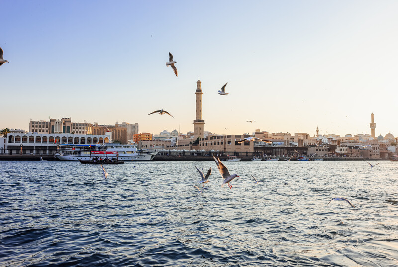

Hozirgi kunda kelajak shahri deya e’tirof etiladigan Dubayning paydo bo‘lganiga ko‘p bo‘lgani yo‘q. Agar uni boshqa rivojlangan shaharlar bilan solishtirsak, birdaniga paydo bo‘lib qolgan megapolisga o‘xshaydi. Dubayni kelajak shahri deb atashlari bejiz emas. Uning rivojlanish sur’ati shunchalik yuqoriki, atigi 50 yil ichida Dubay kichik port shahridan butun dunyoga mashhur bo‘lgan ma’rifatli shaharga aylana oldi.
Buning sabablari bisyor. Chunki aeroportdan tortib to dam olish manzillariga qadar sayyohlar uchun qulaylik yaratilgan. Keling, bu qulayliklarning ayrimlari haqida to‘xtalaman.